Felipe Xavier Buson
05 July 2023
PDF
Tips for Successful Method Automation
Work vertically not horizontally.
When the multi-channel pipette is used it will aspirate/dispense one column at a time. Layout the source plate so that the samples are in columns.
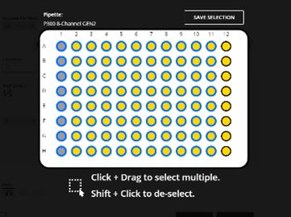
Name the plates and reagents to allow easy protocol design.
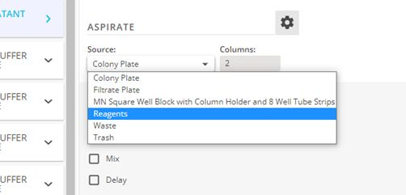
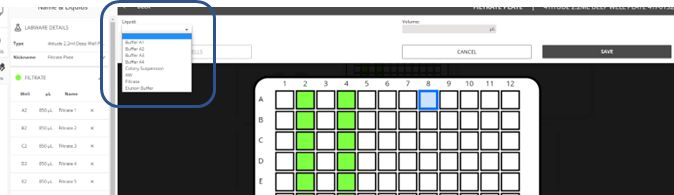
Set-up the deck to allow efficient pipetting.
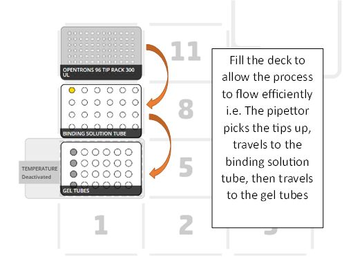
Consider the placement of plates and tips.
Where possible try to avoid moving tips across plates to reduce the risk of potential ‘drips’ contaminating plates.
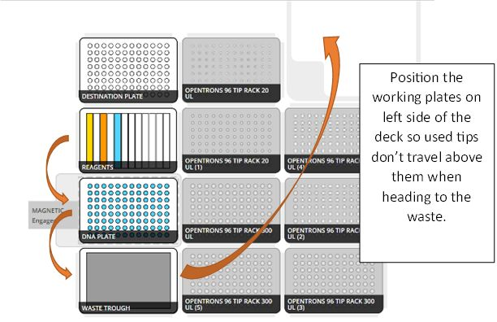
Consider the tip use strategy.
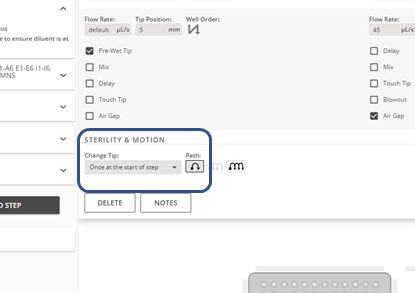
If the destination well contains the sample avoid cross contamination by dispensing at height.
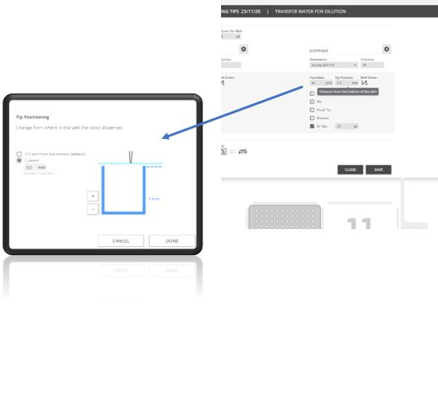
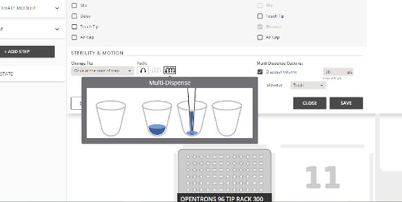
Consider pipetting parameters.
- Flow Rate – Speed can be amended to reflect the liquid e.g. slow the speed for viscous liquids.
- Well Order – Amends the pipetting pattern, can be useful when using the single channel pipettes.
- Tip Position – Set the optimal position for aspirate dispense.
- Pre-Wet – Aspirates and dispenses a small volume prior to aspirating the desired volumes.
- Mix – Ensure liquid is homogenous prior to aspirate/post dispense.
- Delay – Pauses above source well e.g. to allow liquid residue on outside of tip to ‘drip off’.
- Touch Tip – Touches all 4 side of the well to remove residue from tip.
- Air Gap – Adds air into tip after aspirate; useful for volatile liquids that tend to drip e.g. ethanol.
- Blowout – Additional air ‘blown’ through the tip to remove all residue.
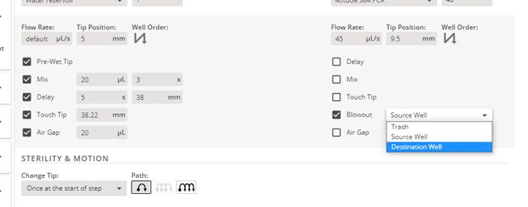
Use the ‘Pause’ option to add extra flexibility.
- Include ‘Off deck’ options – e.g. heated incubations or centrifugation steps
- ‘On deck’ timed incubations – Allows specific timings to be included e.g. 2 minute lysis step
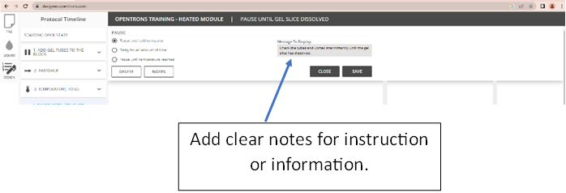
Name the protocol steps to aid protocol design.
Naming the steps makes it easier to amend the protocol later.
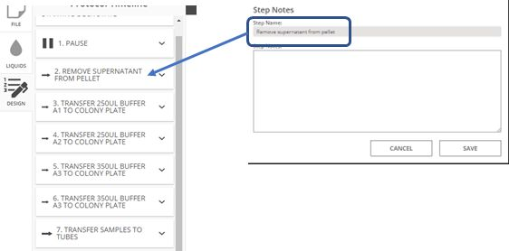
Carry out a ‘Dry’ and ‘Wet’ test run.
- ‘Dry’ - Position the relevant ‘empty’ labware on the deck and run the protocol.
- This will test the movement of the pipettors around the deck.
- ‘Wet’ – Position the relevant labware on the deck, use water instead of sample/reagents.
- This will test the aspiration and dispense heights and the physical liquid transfer.
Carry out some reagent test transfers.
Create a simple liquid transfer protocol to test the aspiration and dispense parameters of liquids that are particularly viscous or volatile.